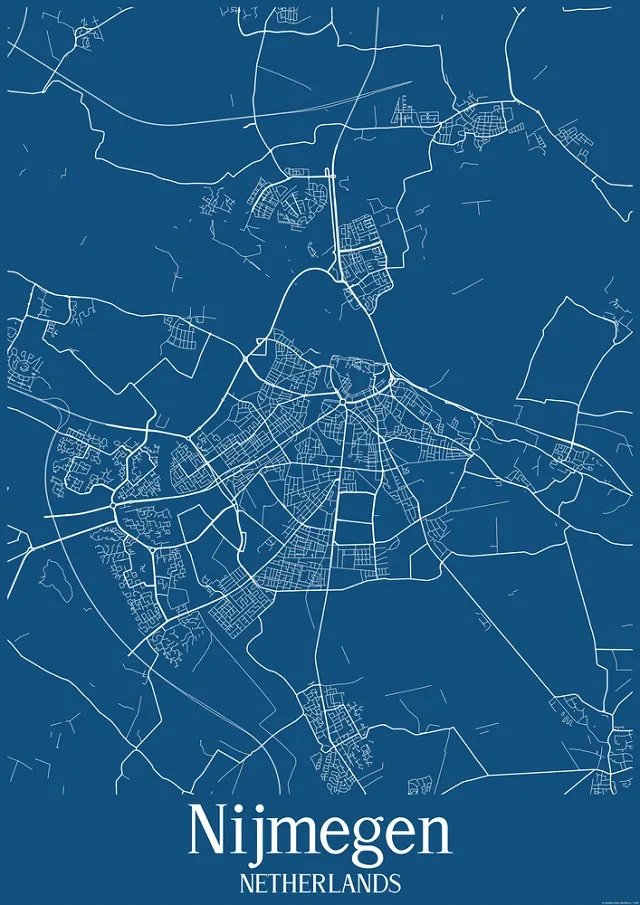
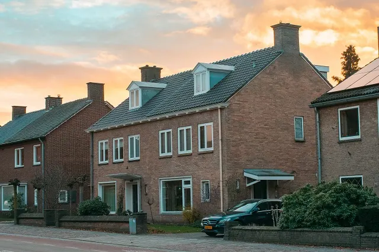

Wonen in Nijmegen – Waar Moet je aan Denken?
Gepubliceerd op 19 januari 2023, bijgewerkt op 21 oktober 2023

Nijmegen is één van de meest aantrekkelijke plaatsen om te wonen. Wij begrijpen dat wel. De stad is immers een lust voor het oog, en ook betreft het een enorm veelzijdige stad. Je kunt in Nijmegen in principe alles vinden. Het is dan ook niet gek dat veel mensen zich graag permanent vestigen in Nijmegen. Ben jij dat ook van plan? Dan zijn er een aantal dingen die je in gedachte moet houden.
Zowel kopen als huren in het centrum van Nijmegen is maar voor weinig mensen weggelegd. De woningen zijn schaars en bovendien enorm duur. Gelukkig zijn er andere wijken waar je terecht kunt zoals Nijmegen Nieuw-West en Lindenhout. Staat de verhuizing vast? Schrijf je dan op tijd in bij de Gemeente Nijmegen.
Ben jij ook van plan om in Nijmegen te gaan wonen? Dan ben je bij ons aan het juiste adres. In het onderstaande artikel bespreken we enkele onmisbare zaken waar je als nieuwe permanente inwoner van Nijmegen aan moet denken. Je wilt immers compleet voorbereid de verhuizing in gaan, is het niet? Laten we dus snel gaan kijken waar jij zoal aan moet denken wanneer je de wens hebt om in Nijmegen te wonen.

Hier moet je op letten wanneer je in Nijmegen wil gaan wonen
Heb jij reeds een woning in Nijmegen gevonden, of ben je nog zoekende? Jij wilt hoe dan ook waarschijnlijk weten wat je te wachten staat. Waar moet je nu precies aan denken wanneer je in Nijmegen wilt gaat wonen? Onderstaand bespreken we enkele relevante zaken.
Verschillende stadsdelen
Je bent waarschijnlijk wel bekend in Nijmegen centrum. De historische binnenstad laat duidelijk zien dat Nijmegen een stad is met een rijke geschiedenis. Alhoewel er in het centrum ook woningen zijn gevestigd, is het een grote uitdaging om hier een plekje te bemachtigen.
De meeste woningen in het centrum bevinden zich boven de winkels. Kan jij een bruisende sfeer wel op prijs stellen? Dan is wonen in het centrum te overwegen. Maar pas wel op, de prijzen zijn door de jaren heen flink gestegen. Gelukkig zijn er ook nog andere opties.
Nijmegen Nieuw-West
Nijmegen Nieuw-West bestaat uit diverse wijken, waaronder Heseveld, Neerbosch en Hees. Het betreft een oud deel van Nijmegen, waar in de laatste jaren echter steeds meer nieuwbouw te vinden is. Zowel appartementencomplexen als laagbouw zijn in dit stadsdeel te vinden. Het is een prima buurt voor starters die zich graag in de prachtige stad Nijmegen willen vestigen.
Lindenholt
In het westen van Nijmegen vind je stadsdeel Lindenholt. Het is één van de rustigere buurten van Nijmegen. De inwoners van Lindenholt zullen het erover eens zijn dat dit stadsdeel heerlijk wonen is. Niet te druk, maar toch genoeg te doen. Het beste van twee werelden. Het is bovendien een stuk goedkoper dan wonen in het centrum.

Prijzen koopwoningen en huurwoningen
Ben jij van plan om permanent in Nijmegen te gaan wonen? Dan kun je met diverse huurprijzen te maken krijgen. Ben jij op zoek naar een koopwoning? Ook dan kunnen de prijzen verschillen per stadsdeel.
Het is geen geheim dat de huizenmarkt in de afgelopen jaren een stuk minder toegankelijk is geworden voor veel mensen. We zagen de prijzen de pan uit rijzen, en het huren of kopen van een woning was opeens voor een groot deel van de starters geen optie meer. Gelukkig zien we momenteel dat de storm op de huizenmarkt heel langzaam gaat liggen, en we hopen dan ook op meer mogelijkheden.
Over het algemeen zijn zowel de koop- als huurprijzen in Nijmegen centrum het hoogst. Dit is nu eenmaal één van de meest geliefde stadsdelen. Zo zijn woningen met een huurprijs van minder dan €1.500,- in het centrum zeer schaars. Dit komt nog maar weinig voor.
Hoe verder je van het centrum verwijderd bent, hoe betaalbaarder de woningen worden. Het kan dan ook nuttig zijn om in Nijmegen-Noord of juist in het zuiden van de regio op zoek te gaan naar een woning.

Woning gevonden? Schrijf je in bij de gemeente
Heb jij woonruimte weten te bemachtigen in het mooie Nijmegen? Van harte! Dan kan je binnenkort eindelijk gaan overnachten in Nijmegen. Het is nu tijd om de gehele verhuizing in goede banen te leiden. Je bent waarschijnlijk al druk met het inpakken en het zoeken naar een betaalbare verhuisservice. Je kunt echter in alle drukte zomaar eens vergeten om jezelf in te schrijven.
Inschrijven bij de gemeente waar je gaat wonen is een belangrijke stap. Dit moet je uiterlijk 5 dagen nadat je bent verhuist hebben geregeld. Doe je dit te laat? Dan riskeer je een boete van maximaal €325,-. Dit is de boete die gemeenten mogen geven wanneer belangrijke wijzigingen niet op tijd worden doorgegeven.
Het te laat doorgeven van je nieuwe adres kan bovendien een hoop gedoe opleveren. Denk alleen al aan het vuilnis dat veel te laat wordt opgehaald, om slechts één voorbeeld te noemen. Zorg er dus voor dat je jouw verhuizing naar of binnen Nijmegen op tijd doorgeeft.
Inschrijven Gemeente NijmegenMakelaars in Nijmegen
Zin om te beginnen? In onze bedrijvengids vind je alle 48 makelaars in Nijmegen, met openingstijden, kenmerken en een kaart.
Bekijk alle 48 makelaars in Nijmegen
Heb je zelf een makelaar? Laat je hier uitlichten.